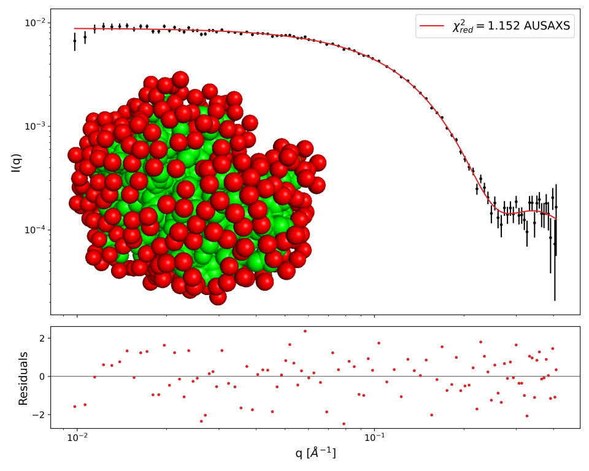

Home
Tutorial: Structural validation using AUSAXS
Contributors: Kristian Lytje, Jeppe Breum Jacobsen, Jan Skov Pedersen

Black: SAXS data. Red: fit from hydrated atomic-resolution structure using AUSAXS. The atoms are shown in green, with the generated hydration shell shown in red.
Before you start
- Make sure you have the following free software installed:
(1) The AUSAXS software.
(2) Python (including numpy, scipy, and matplotlib) to visualize the results.
(3) A qualitative understanding of SAXS data is advantageous, but not required. See, for example, Tutorial: Primary Data analysis.
Learning outcomes
In this tutorial you will learn how to use the structural validation program of the AUSAXS software to compare measured SAXS data with predictions from atomic-resolution structures.- Be familiar with the AUSAXS software.
- Be able to perform structural validation based on measured SAXS data.
Introductory remarks
While measured SAXS data by itself does not provide high-resolution information, when combined with atomic-resolution structures it can be a powerful tool for structural validation.
Such validations have routinely been performed throughout the history of SAXS, for example by comparing measured data with predictions from crystal structures, NMR models, or, more recently,
AlphaFold models.
While we will in this tutorial use AUSAXS for the SAXS predictions, many other software packages, such as CRYSOL, Pepsi-SAXS, and FoXS offers the same functionality.
The primary difference in these softwares are the excluded volume models, which will not be discussed in detail here.
Be aware that none of these tools are suitable for wide-angle analyses. In such cases, molecular dynamics-based programs (such as WAXSiS) should be used.
For more information on the theory behind SAXS predictions from atomic-resolution structures, please refer to the references provided at the end of this tutorial.
Part I: Performing a basic validation
Part II: Analyzing the output
Part III: Using AUSAXS in Python scripts
We have recently releasedpyAUSAXS, a Python interface to the AUSAXS software. This allows you to easily integrate SAXS predictions into your own Python scripts.
We will in this section demonstrate how to use pyAUSAXS to perform the same analyses as in Part I & II. For more information, see the online documentation.
Continuing the analysis
Exercises
Challenges
Feedback
Help us improve the tutorials by- Reporting issues and bugs via our GitHub page. This could be typos, dead links etc., but also insufficient information or unclear instructions.
- Suggesting new tutorials/additions/improvements in the SAStutorials forum.
- Posting or answering questions in the SAStutorials forum.